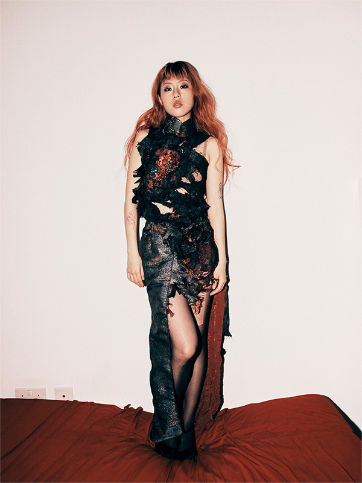
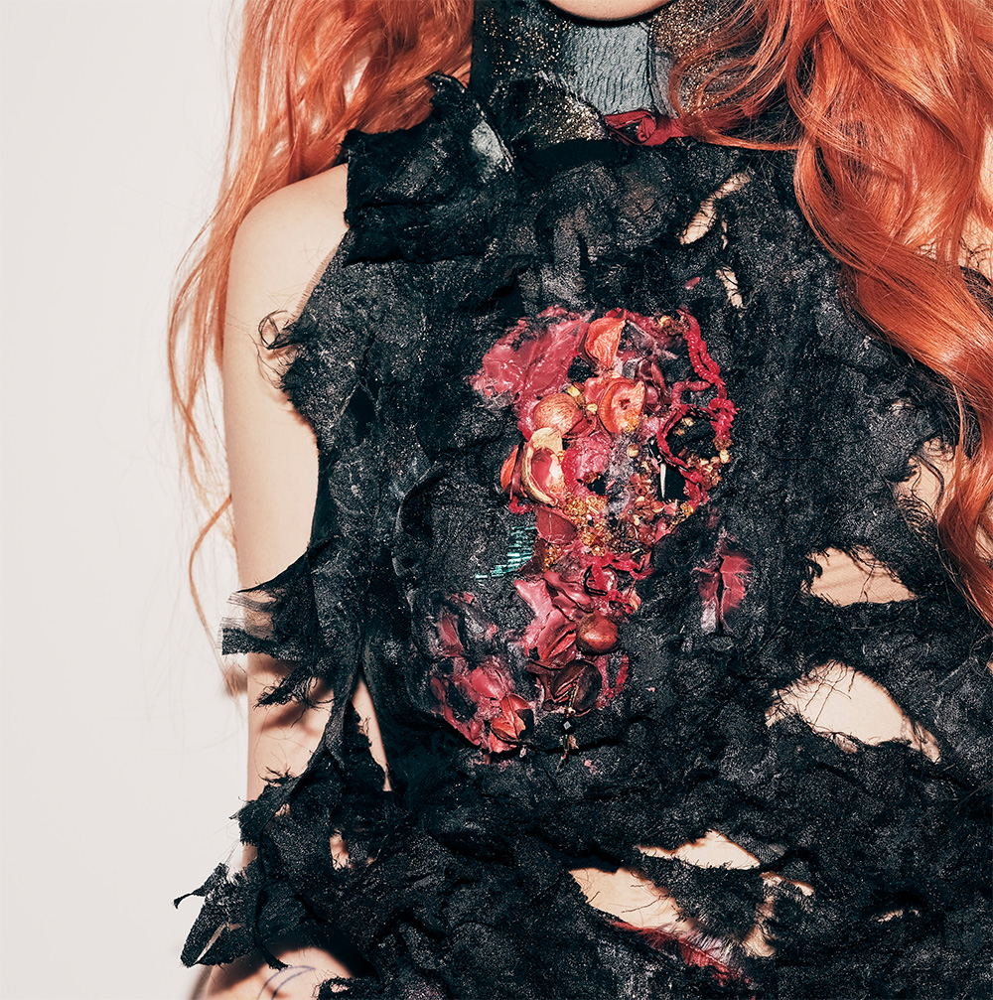

Matchstick Hostess
A fragmented archive of the body—exploring female desire, control, and the soft violence of gaze.




Development Process
Research & Inspiration

Inspired by the stories of women in Kowloon Walled City, I explored...
Material Experimentation

Using sheer fabrics, elastic cords, and reflective surfaces, I tested the tension between visibility and concealment.
Design Development

Sketches and toiles explored fragmented silhouettes, disjointed seams, and straps that gesture toward constraint and seduction.
Reflection
This project helped me reclaim the narrative around objectification, turning the lens back onto the viewer. The Matchstick Hostess is not a victim—she burns softly, but with agency.